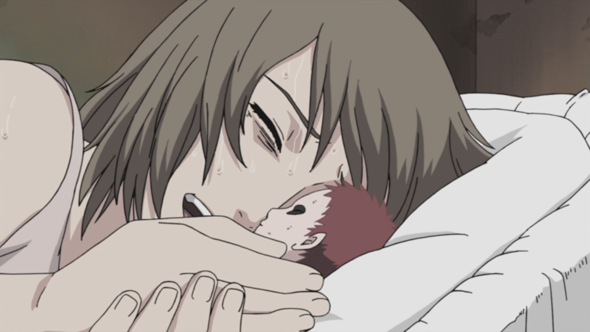
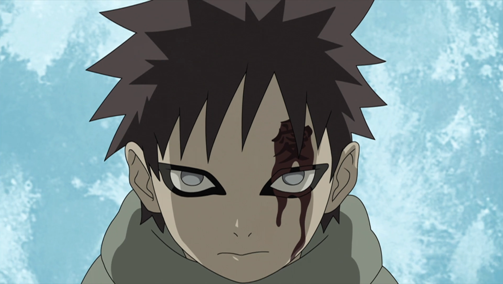
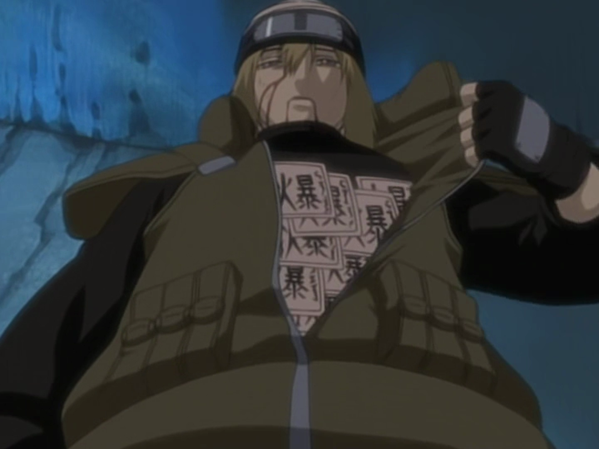

Gaara was raised in isolation during his early life, taught ninjutsu by his father and cared for by his maternal uncle, Yashamaru. When he was allowed to roam around the village, Gaara would try to connect with the villagers, being kind to them and offering them any assistance he could. However, being a jinchūriki made the villagers frightened of Gaara; adults avoided him and, when they couldn't, treated him delicately while children would run from him on sight. Gaara would try to assure them he meant no harm, but in the process would inadvertently injure or even kill them with his sand. Gaara did not understand this pain he caused others because his sand protected him from all injury. When he was six years old, Gaara asked Yashamaru to explain pain to him. From Yashamaru's explanation, Gaara believed he did know pain: the unbearable agony in his heart.

From this, Yashamaru elaborated that physical pain, what causes one to bleed, could be cured with medicine and time, whereas pain of the heart, like Gaara experienced, could only be cured with love. Gaara, said Yashamaru, received love everyday, from both his mother - whose spirit controlled the sand that protected him - and from Yashamaru himself. Gaara was pleased by this and went out into the village to show some love to those he'd harmed, but his efforts were met only with more fear and hate. Gaara was dismayed and went off to try and understand why he was treated as such a monster. While doing so, he was attacked by one of Suna's Anbu, who he fatally wounded with his sand. When he unmasked the Anbu, Gaara discovered it was Yashamaru.


Gaara was devastated that Yashamaru, the only living person to love him, would try to kill him and asked for an explanation. Yashamaru replied that it was a mission given to him by Rasa, Gaara's father, it having been decided by the Suna Council that Gaara was a failed experiment that, if allowed to live, would only continue to do harm to the village and its people. Gaara tried to find solace in the fact that Yashamaru had been ordered to kill him, but Yashamaru insisted, lying to Gaara, that he volunteered and that he'd always hated Gaara for causing Karura's death. Karura had not loved Gaara either, and named him after the phrase "a self-loving carnage" (我を愛する修羅, Ware o aisuru shura) so that he would be a curse upon Suna for what it had done to her. With his explanation done, Yashamaru asked Gaara to "please die" before blowing himself up with explosive tags.